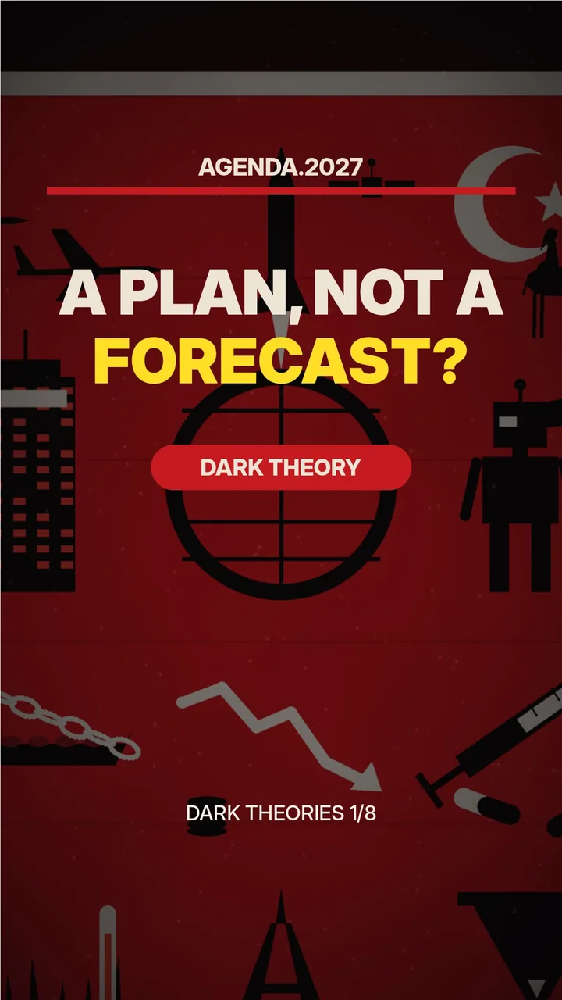

A plan, not a forecast?
What if the 2027 cover isn't a forecast, but a plan? Meet 'predictive programming'.
The theory, where it came from, and why it only works backwards: people count the hits and forget the misses. Theory ≠ fact. Count the misses too.
TheoryFact